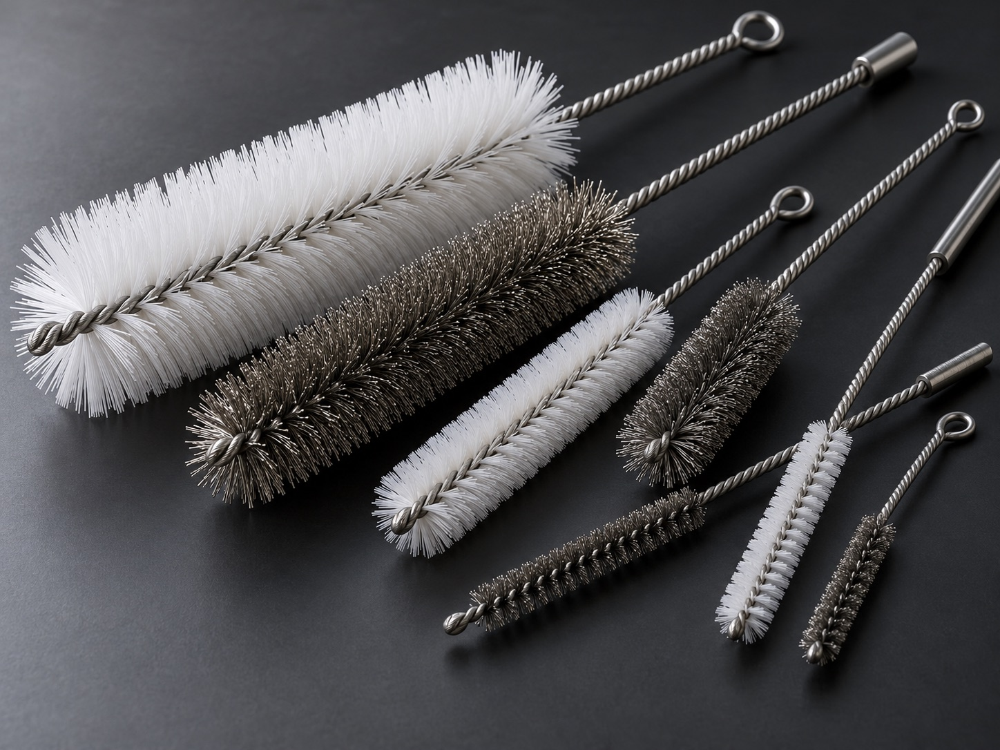

Tube & bore cleaning
For the inside wall of tubes, pipes and passages. Share the opening, depth, shape and contaminant so brush contact can be reviewed against access and surface requirements.
Home / Product families / Pipe & tube brushes
INTERNAL CLEANING & FINISHING
Choose a brush direction for internal cleaning, residue removal, deburring or surface preparation. The opening, working depth, entry path and substrate guide the head geometry, fill and tool connection.
Request a pipe or tube brush quote
For the inside wall of tubes, pipes and passages. Share the opening, depth, shape and contaminant so brush contact can be reviewed against access and surface requirements.
For edges and transitions inside machined holes or intersecting passages. The drawing and burr location help define reach, head profile and the contact area.
Wire and non-metallic filament options can be considered according to substrate, residue, finish target and downstream process. Confirm material compatibility before production.
APPLICATION-LED SELECTION
A drawing, sample brush or clear photo of the opening helps reduce guesswork. Final design and operating limits are agreed after technical review.
| Workpiece | Pipe, tube, bore or passage material; coating and areas to protect |
|---|---|
| Access path | Opening shape, working depth, bend or entry direction |
| Operation | Cleaning, residue removal, deburring, blending or finish preparation |
| Brush details | Head form, reach, fill preference, stem and tool connection |
| Validation | Photo or drawing, desired result, sample quantity and inspection reference |
COMMON QUESTIONS
Start with the opening and the surface to contact, then share the working depth, access path and part material. The final brush fit should be reviewed for the actual application rather than selected from an assumed standard size.
Yes. Send a drawing, sample or photo plus the operation, residue or burr, desired result and tool connection. Ferrabrio can review a custom brush direction and confirm the specification before quotation.
Share the part geometry and operation. Ferrabrio can review a custom configuration and confirm its specification before quotation.